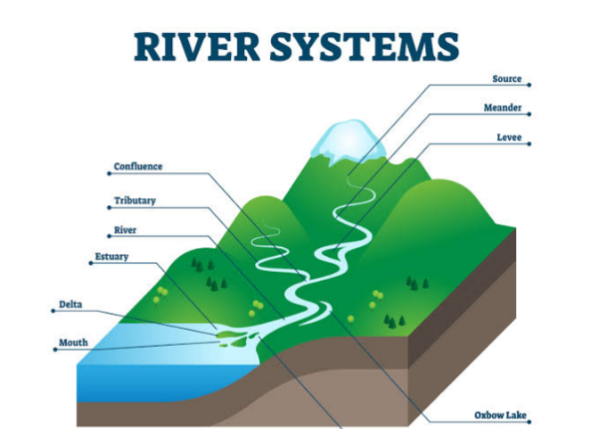
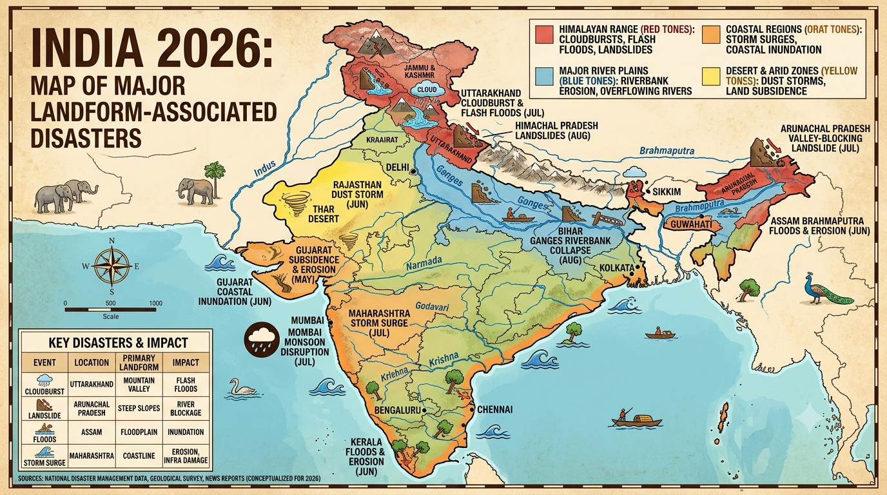
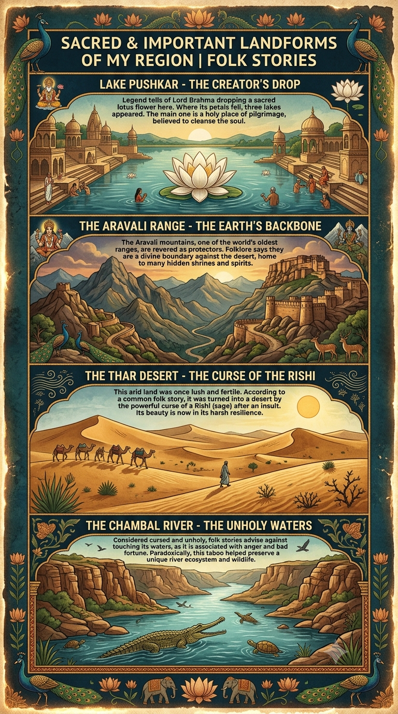

Social Studies class 9 Shaping of the Earth’s Surface
CHAPTER-2
(Shaping of the
Earth’s Surface)
Questions and Activities
1. What are the sources of energy that are required to cause movements associated with the internal forces of the Earth?
Answer:
The movements associated with the internal forces of the Earth are caused by the enormous amount of heat energy present inside the Earth. This internal heat is generated from the following sources:
- Primordial Heat: This is the heat left inside the Earth since its formation about 4.6 billion years ago. It originated during the accumulation of rocks, dust, and gases that formed the Earth.
- Radioactive Decay: Radioactive elements such as uranium, thorium, and potassium continuously decay inside the Earth's crust and mantle, releasing a large amount of heat. This is the major source of Earth's internal heat.
- Gravitational Pressure: The immense pressure exerted on the Earth's inner layers generates heat due to compression.
- Core Formation: During the Earth's early formation, heavy elements like iron and nickel sank towards the core, releasing heat that still remains inside the Earth.
This internal heat produces convection currents in the mantle, which move the tectonic plates. As a result, earthquakes, volcanic eruptions, mountain building, and other endogenic processes take place.
2. Relate various physiographic divisions you have studied in the earlier grades with various endogenic forces responsible for their origin.
Answer:
The major physiographic divisions of the Earth have been formed due to different endogenic (internal) forces such as folding, faulting, volcanic activity, and tectonic plate movements.
| Physiographic Division | Endogenic Force Responsible | Example |
|---|---|---|
| Fold Mountains | Compression forces causing folding due to the collision of tectonic plates. | Himalayas, Alps |
| Block Mountains and Rift Valleys | Tensional forces leading to faulting of the Earth's crust. | Black Forest, Rhine Rift Valley |
| Volcanic Mountains and Plateaus | Volcanic eruptions and lava deposition. | Mount Fuji, Deccan Plateau |
| Plateaus | Upliftment by tectonic movements or volcanic activity. | Chotanagpur Plateau, Tibetan Plateau |
| Earthquake-prone Regions | Sudden movement of tectonic plates along faults. | Japan, Himalayan Region |
Thus, the Earth's major landforms have developed due to continuous internal forces acting over millions of years.
3. Why and where do earthquakes occur frequently? Is it possible to predict earthquakes?
Answer:
Earthquakes occur due to the sudden release of energy stored in the Earth's crust. This happens when tectonic plates move, collide, separate, or slide past each other along faults.
Why do earthquakes occur frequently?
- Continuous movement of tectonic plates.
- Collision and subduction of plates.
- Sudden slipping of rocks along faults.
- Volcanic activity.
- Release of accumulated stress in the Earth's crust.
Where do earthquakes occur frequently?
- Along tectonic plate boundaries.
- In the Pacific Ring of Fire, where about 75% of the world's earthquakes occur.
- In the Himalayan region due to the collision of the Indian Plate with the Eurasian Plate.
- Along mid-ocean ridges and transform faults.
Is it possible to predict earthquakes?
No. Scientists cannot accurately predict the exact time, place, or magnitude of an earthquake. However, they can identify earthquake-prone regions by studying tectonic plates, fault lines, and previous earthquake records. Modern instruments can detect seismic waves and provide early warnings after an earthquake begins, but precise prediction is still not possible.
4. "Plate movements are responsible for the distribution of earthquakes and volcanoes." Explain.
Answer:
The Earth's lithosphere is divided into several tectonic plates that continuously move over the semi-molten asthenosphere. Most earthquakes and volcanoes are concentrated along the boundaries of these moving plates.
Plate movements and earthquakes:
- When tectonic plates collide, stress builds up in rocks.
- The sudden release of this stress causes earthquakes.
- Earthquakes also occur where plates slide past each other or move apart.
Plate movements and volcanoes:
- At convergent plate boundaries, one plate moves beneath another in a process called subduction.
- The subducted plate melts into magma, which rises through cracks and erupts as volcanoes.
- At divergent boundaries, magma rises through the gaps created by separating plates and forms volcanic mountains and new crust.
Examples:
- The Pacific Ring of Fire contains a large number of active volcanoes and frequent earthquakes because many tectonic plates meet there.
- The Himalayan region experiences frequent earthquakes due to the collision of the Indian Plate and the Eurasian Plate.
- Countries such as Japan, Indonesia, Chile, and New Zealand are located near active plate boundaries and therefore experience frequent earthquakes and volcanic eruptions.
Thus, the movement of tectonic plates determines the global distribution of earthquakes and volcanoes.
5. Draw and label a diagram of a meander and a delta.
Answer:

6. How are deforestation and erosion associated with each other? Explain.
Answer:
Deforestation and soil erosion are closely related. Trees and plants help bind the soil with their roots, reducing the chances of the topsoil being washed or blown away. When forests are cut down, the protective vegetation cover is removed, leaving the soil exposed to wind and rain.
During heavy rainfall, the exposed topsoil is easily washed away, while strong winds carry away loose soil particles. As a result, the fertile layer of soil is lost, reducing agricultural productivity and increasing the risk of floods and landslides. Thus, deforestation is one of the major causes of soil erosion and land degradation.
7. Develop a plan to protect the land in your local area from erosion.
Answer:
A suitable plan to protect land from erosion in the local area should include the following measures:
- Plant more trees and encourage afforestation to hold the soil firmly.
- Prevent unnecessary cutting of trees and protect existing forests.
- Promote terrace farming and contour ploughing on hilly slopes.
- Construct check dams and embankments to reduce the speed of flowing water.
- Grow grasses and shrubs on barren land to stabilize the soil.
- Avoid overgrazing by regulating the movement of livestock.
- Spread awareness among local people about soil conservation.
- Adopt rainwater harvesting to reduce surface runoff.
These measures will help conserve fertile soil, improve agricultural productivity, and protect the environment.
8. Which disasters do you think you might experience in your region? Discuss a mitigation plan in your classroom.
Answer:
The disasters experienced in a region depend on its geographical location. In many parts of India, common disasters include earthquakes, floods, droughts, heat waves, landslides, cyclones, and thunderstorms.
Mitigation Plan:
- Prepare an emergency evacuation plan for the classroom.
- Conduct regular mock drills for earthquakes and fire emergencies.
- Keep a first-aid kit and emergency contact numbers readily available.
- Learn safe evacuation routes and assembly points.
- Remain calm and follow the teacher's instructions during emergencies.
- Do not panic or spread rumours.
- Stay updated with official weather and disaster warnings.
- Create awareness among students about disaster preparedness and safety measures.
Proper planning and preparedness can significantly reduce the loss of life and property during disasters.
9. Prepare a model of landforms created by underground water.
Answer:
A simple model of landforms created by underground water can be prepared using clay, cardboard, thermocol, or plaster of Paris.
Include the following features in the model:
- Cave
- Stalactites (hanging from the cave roof)
- Stalagmites (rising from the cave floor)
- Limestone rocks
- Underground water flow
- Sinkhole (optional)
Label all the parts clearly. This model demonstrates how underground water dissolves limestone rocks over a long period, forming caves and other karst landforms.
10. What precautionary measures will you take if you are staying in an earthquake-prone region?
Answer:
If I am staying in an earthquake-prone region, I will take the following precautionary measures:
- Live in a building constructed according to earthquake-resistant standards.
- Secure heavy furniture, shelves, and electrical appliances to the walls.
- Keep an emergency kit containing water, food, medicines, a torch, batteries, and important documents.
- Learn safe places inside the house, such as under a sturdy table or near an interior wall.
- Stay away from windows, glass doors, and heavy objects during an earthquake.
- Follow the "Drop, Cover, and Hold" technique during shaking.
- Do not use lifts during or immediately after an earthquake.
- After the earthquake, switch off gas and electricity if necessary and move to an open area.
- Follow the instructions issued by local authorities and disaster management agencies.
By following these precautions, the risk of injury and damage during an earthquake can be greatly reduced.
11. Prepare a map showing landform-associated disasters that happened in the current calendar year.

12. Create a poster showing landforms that are considered to be sacred or important in your region, and add the folk stories associated with them.

13. Document a case of a disaster that hit your region in the past, highlighting its effects on various human activities.
Answer:
Case Study: Floods in Rajasthan (Jaipur Region)
Heavy rainfall during the monsoon season has caused flooding in many parts of Rajasthan, including Jaipur and nearby districts. Overflowing rivers and poor drainage systems have led to waterlogging, damage to roads, and disruption of normal life.
Effects on Human Activities:
- Roads and bridges were damaged, disrupting transportation.
- Schools and offices remained closed in affected areas.
- Agricultural fields were submerged, causing crop losses.
- Many houses and shops were damaged due to floodwater.
- Electricity and communication services were interrupted.
- People were shifted to safer places through rescue operations.
- Waterborne diseases increased because of contaminated drinking water.
Conclusion:
Proper drainage systems, flood forecasting, afforestation, and public awareness can help reduce the impact of floods and protect lives and property.
14. Translate the given poster on landslide into your native language and display it in your home.
Answer (Hindi Translation):
भूस्खलन (LANDSLIDE)
सतर्क रहें, सुरक्षित रहें।
भूस्खलन से पहले
- अधिक से अधिक पेड़ लगाएँ, क्योंकि पेड़ों की जड़ें मिट्टी को मजबूती से बाँधकर रखती हैं।
- रेडियो, टीवी या समाचार पत्रों के माध्यम से मौसम और चेतावनी संबंधी जानकारी प्राप्त करें।
- नालियों और जल निकासी मार्गों को साफ रखें।
- यदि इमारत, सड़क या पेड़ों में दरारें दिखाई दें तो सावधान रहें।
- ढलानों के पास या जल निकासी मार्गों को रोककर निर्माण कार्य न करें।
भूस्खलन के दौरान
- शांत रहें और घबराएँ नहीं।
- अपने परिवार के साथ सुरक्षित स्थान पर रहें।
- यदि चट्टानों के गिरने, पेड़ों के टूटने या असामान्य आवाजें सुनाई दें तो तुरंत सुरक्षित स्थान पर चले जाएँ।
- भूस्खलन वाले क्षेत्र से तुरंत दूर हट जाएँ और सुरक्षित स्थान पर पहुँचें।
- निकटतम प्रशासन या आपदा प्रबंधन विभाग को सूचना दें।
भूस्खलन के बाद
- गिरी हुई चट्टानों, ढीली मिट्टी तथा टूटे हुए बिजली के तारों से दूर रहें।
- घायलों की सहायता करें और आवश्यक होने पर चिकित्सकीय सहायता प्राप्त करें।
- अनावश्यक रूप से क्षतिग्रस्त क्षेत्रों में प्रवेश न करें।
- नदियों, झरनों या कुओं का दूषित पानी पीने से बचें।
- प्रशासन द्वारा जारी सुरक्षा निर्देशों का पालन करें।
स्मार्ट बनें, तैयार रहें।
15. Divide the class into three groups. Each group will work on one project (water, wind, and glacier). The project should highlight the causes, impact on human life and the environment, and mitigation measures.
Answer:
Group 1: Water (River and Rainwater Erosion)
Causes:
- Heavy rainfall
- Floods
- Fast-flowing rivers
- Deforestation
Impact on Human Life and Environment:
- Loss of fertile soil
- Damage to crops and houses
- Flooding of villages and towns
- Loss of biodiversity
Mitigation Measures:
- Afforestation
- Construction of dams and embankments
- Rainwater harvesting
- Proper drainage systems
Group 2: Wind Erosion
Causes:
- Strong winds
- Dry and barren land
- Lack of vegetation
- Overgrazing
Impact on Human Life and Environment:
- Loss of fertile topsoil
- Formation of sand dunes
- Reduced agricultural productivity
- Dust storms affecting health and transport
Mitigation Measures:
- Plant shelter belts and trees
- Protect grasslands
- Control overgrazing
- Adopt sustainable farming practices
Group 3: Glacier
Causes:
- Climate change
- Global warming
- Rising temperatures
Impact on Human Life and Environment:
- Melting glaciers increase the risk of floods.
- Reduction in freshwater resources.
- Rising sea levels.
- Loss of habitats for mountain plants and animals.
Mitigation Measures:
- Reduce greenhouse gas emissions.
- Promote renewable sources of energy.
- Increase afforestation.
- Create awareness about climate change.
- Conserve natural resources.